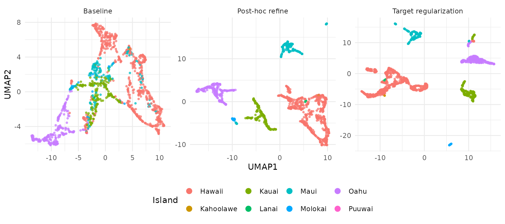
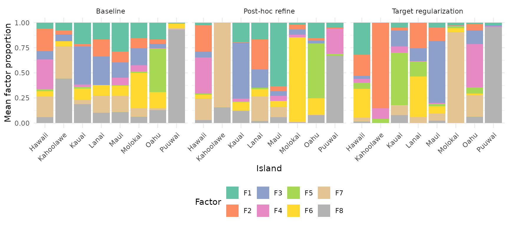
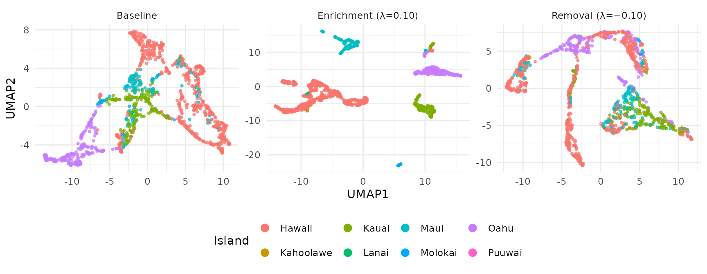
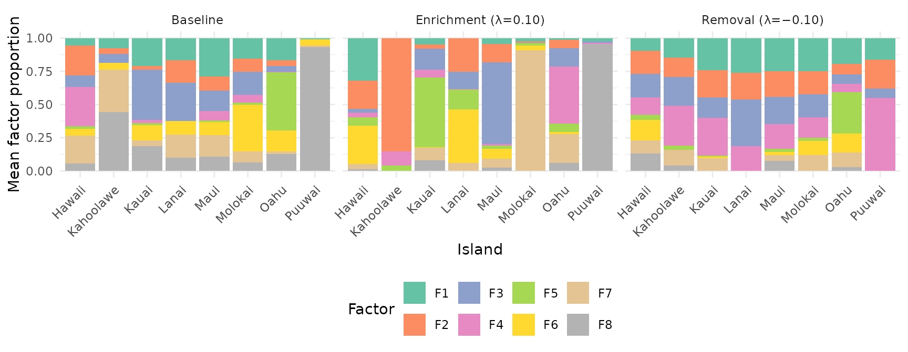

Motivation
NMF discovers latent structure from data alone — no labels needed. But when you have class labels (cell types, tissue origins, experimental conditions), you can steer the factorization to produce embeddings that better separate known groups without collapsing all information toward the centroids.
RcppML provides three complementary mechanisms:
-
Post-hoc refinement via
refine()— correct an existing NMF embedding using label information -
In-NMF target regularization via
compute_target()+target_H/target_lambdaparameters — bias the factorization toward (or away from) class-specific structure during optimization -
Information removal via negative
target_lambda— suppress target-correlated structure using PROJ_ADV (Projected Adversarial Removal)
Setup: Hawaii Birds Dataset
The hawaiibirds dataset contains bird species counts
across 1,183 geographic grid cells on 8 Hawaiian islands. We’ll use the
island of origin as a class label.
Step 1: Baseline NMF
First, run NMF with no label guidance:
Evaluate the embedding using assess(), which computes
clustering quality (NMI, ARI), classification accuracy (KNN, logistic
regression, random forest), and silhouette scores:
res_base <- assess(model_base, labels, classifiers = c("knn", "lr"))
cat("Baseline NMI:", round(res_base$metrics$nmi, 3), "\n")
#> Baseline NMI: 0.488
cat("Baseline ARI:", round(res_base$metrics$ari, 3), "\n")
#> Baseline ARI: 0.382
cat("Baseline KNN accuracy:", round(res_base$metrics$accuracy_knn, 3), "\n")
#> Baseline KNN accuracy: 0.898Step 2: Post-Hoc Refinement
refine() applies an OAS-ZCA whitened centroid correction
to the existing embedding. This shifts each sample toward its class
centroid in a decorrelated space, improving class separation without
distorting the overall structure.
Internally, refine() Frobenius-normalizes the target to
match the energy of H, so lambda is interpretable as a
fraction of H-energy added as correction:
model_refined <- refine(model_base, labels = labels, lambda = 0.5)
res_refined <- assess(model_refined, labels, classifiers = c("knn", "lr"))
cat("Refined NMI:", round(res_refined$metrics$nmi, 3), "\n")
#> Refined NMI: 0.827
cat("Refined ARI:", round(res_refined$metrics$ari, 3), "\n")
#> Refined ARI: 0.669
cat("Refined KNN accuracy:", round(res_refined$metrics$accuracy_knn, 3), "\n")
#> Refined KNN accuracy: 0.994Step 3: In-NMF Target Regularization
Instead of correcting after the fact, you can bias the NMF
optimization itself toward class-specific structure.
compute_target() builds a target matrix from labels, and
target_H/target_lambda inject it as a
regularization term:
T_mat <- compute_target(model_base@h, labels)
set.seed(42)
model_target <- nmf(A, k = 8, tol = 1e-4, maxit = 100,
target_H = T_mat, target_lambda = 0.10)
res_target <- assess(model_target, labels, classifiers = c("knn", "lr"))
cat("Target reg NMI:", round(res_target$metrics$nmi, 3), "\n")
#> Target reg NMI: 0.846
cat("Target reg ARI:", round(res_target$metrics$ari, 3), "\n")
#> Target reg ARI: 0.663
cat("Target reg KNN accuracy:", round(res_target$metrics$accuracy_knn, 3), "\n")
#> Target reg KNN accuracy: 0.997The target regularization modifies the NNLS subproblem by adding
to the Gram matrix diagonal and
to the right-hand side, gently pulling H toward the target structure at
every iteration. Note: target_lambda operates in the scale
of the NNLS system (Gram matrix), so small values (0.05–0.15) typically
produce large effects.
Comparison
mse <- function(m) {
resid <- as.matrix(A) - m@w %*% diag(m@d) %*% m@h
mean(resid^2)
}
mse_base <- mse(model_base)
results <- data.frame(
Method = c("Baseline", "Post-hoc refine (λ=0.5)",
"Target regularization (λ=0.10)"),
NMI = c(res_base$metrics$nmi, res_refined$metrics$nmi,
res_target$metrics$nmi),
ARI = c(res_base$metrics$ari, res_refined$metrics$ari,
res_target$metrics$ari),
KNN_acc = c(res_base$metrics$accuracy_knn, res_refined$metrics$accuracy_knn,
res_target$metrics$accuracy_knn),
MSE_ratio = c(1.0, mse(model_refined) / mse_base,
mse(model_target) / mse_base)
)
results[, 2:4] <- round(results[, 2:4], 3)
results[, 5] <- round(results[, 5], 1)
knitr::kable(results, row.names = FALSE,
col.names = c("Method", "NMI", "ARI", "KNN Accuracy",
"MSE ratio"))| Method | NMI | ARI | KNN Accuracy | MSE ratio |
|---|---|---|---|---|
| Baseline | 0.488 | 0.382 | 0.898 | 1.0 |
| Post-hoc refine (λ=0.5) | 0.827 | 0.669 | 0.994 | 1.7 |
| Target regularization (λ=0.10) | 0.846 | 0.663 | 0.997 | 1.4 |
Visualizing the Embeddings
UMAP Projections
UMAPs of the H embeddings show how each method affects island separation:
umap_df <- rbind(
make_umap_df(model_base, labels, "Baseline"),
make_umap_df(model_refined, labels, "Post-hoc refine"),
make_umap_df(model_target, labels, "Target regularization")
)
umap_df$Method <- factor(umap_df$Method,
levels = c("Baseline", "Post-hoc refine",
"Target regularization"))
ggplot(umap_df, aes(UMAP1, UMAP2, color = Island)) +
geom_point(size = 0.8, alpha = 0.7) +
facet_wrap(~Method, scales = "free") +
theme_minimal(base_size = 11) +
theme(legend.position = "bottom") +
guides(color = guide_legend(override.aes = list(size = 3, alpha = 1)))
The baseline embedding shows partial separation that improves with both enrichment methods. Target regularization integrates label information directly during optimization.
Factor Composition by Island
How does each factor distribute across islands? Stacked bar plots reveal whether factors are island-specific or shared. For each model, we normalize H columns to unit sum, then average within each island:
make_bar_df <- function(model, labels, method) {
H <- model@h
# Normalize each column (sample) to proportions
H_prop <- sweep(H, 2, colSums(H), "/")
# Average proportions within each island
islands <- levels(labels)
k <- nrow(H)
avg <- matrix(0, k, length(islands), dimnames = list(
paste0("F", seq_len(k)), islands))
for (i in seq_along(islands)) {
idx <- labels == islands[i]
avg[, i] <- rowMeans(H_prop[, idx, drop = FALSE])
}
df <- as.data.frame(as.table(avg))
names(df) <- c("Factor", "Island", "Proportion")
df$Method <- method
df
}
bar_df <- rbind(
make_bar_df(model_base, labels, "Baseline"),
make_bar_df(model_refined, labels, "Post-hoc refine"),
make_bar_df(model_target, labels, "Target regularization")
)
bar_df$Method <- factor(bar_df$Method,
levels = c("Baseline", "Post-hoc refine",
"Target regularization"))
ggplot(bar_df, aes(Island, Proportion, fill = Factor)) +
geom_col(position = "stack") +
facet_wrap(~Method) +
theme_minimal(base_size = 11) +
theme(axis.text.x = element_text(angle = 45, hjust = 1),
legend.position = "bottom") +
scale_fill_brewer(palette = "Set2") +
labs(y = "Mean factor proportion")
In the baseline, factors are spread diffusely across islands. With target regularization, each factor becomes more specific to one or a few islands — the regularization encourages factor specialization.
Guidance on Choosing a Method
| Method | When to use | Pros | Cons |
|---|---|---|---|
refine(lambda=0.5) |
Quick post-hoc improvement | Fast, no refit needed | Only adjusts H, not W |
target_lambda = 0.10 |
Regularization during fitting | Integrated into optimization | Requires choosing lambda |
Lambda tuning: Start with
target_lambda = 0.10 for in-NMF regularization,
lambda = 0.5 for post-hoc refinement. Values above 0.15 for
in-NMF can saturate on strongly-structured data. Monitor the MSE ratio
(reconstruction cost / baseline): ratios above 3x suggest
over-regularization.
Removing Label-Specific Information (Batch Removal)
Sometimes you want the opposite: an embedding that is invariant to a known grouping variable. For instance, if island origin represents a batch effect or confound, you may want factors that capture ecological patterns across islands rather than island-specific ones.
RcppML uses PROJ_ADV (Projected Adversarial Removal)
to suppress target-correlated structure when target_lambda
is negative. PROJ_ADV modifies the NNLS Gram matrix to deflate
directions aligned with the target:
- Compute the target Gram matrix:
- Trace-scale to match the reconstruction Gram:
- Subtract the scaled target Gram:
- Eigendecompose and clip negative eigenvalues to
- Reconstruct:
The trace-scaling in step 2 ensures is interpretable as the fraction of target energy to remove, regardless of the absolute scale of G or . The eigenvalue clipping in step 4 keeps the modified Gram positive-definite, so directions most aligned with the target are suppressed (their eigenvalues shrink or get clipped) while orthogonal directions are preserved. The right-hand side (b) is not modified.
set.seed(42)
model_remove <- nmf(A, k = 8, tol = 1e-4, maxit = 100,
target_H = T_mat, target_lambda = -0.10)
res_remove <- assess(model_remove, labels, classifiers = c("knn", "lr"))
cat("Island-removed NMI:", round(res_remove$metrics$nmi, 3), "\n")
#> Island-removed NMI: 0.257
cat("Island-removed ARI:", round(res_remove$metrics$ari, 3), "\n")
#> Island-removed ARI: 0.156
cat("Island-removed KNN accuracy:", round(res_remove$metrics$accuracy_knn, 3), "\n")
#> Island-removed KNN accuracy: 0.829
cat("Island-removed MSE ratio:", round(mse(model_remove) / mse_base, 1), "x\n")
#> Island-removed MSE ratio: 3.6 xComparing Enrichment vs Removal
results_all <- data.frame(
Method = c("Baseline", "Target enrichment (\u03bb=0.10)",
"Target removal (\u03bb=\u22120.10)"),
NMI = c(res_base$metrics$nmi, res_target$metrics$nmi,
res_remove$metrics$nmi),
ARI = c(res_base$metrics$ari, res_target$metrics$ari,
res_remove$metrics$ari),
KNN_acc = c(res_base$metrics$accuracy_knn, res_target$metrics$accuracy_knn,
res_remove$metrics$accuracy_knn),
MSE_ratio = c(1.0, mse(model_target) / mse_base,
mse(model_remove) / mse_base)
)
results_all[, 2:4] <- round(results_all[, 2:4], 3)
results_all[, 5] <- round(results_all[, 5], 1)
knitr::kable(results_all, row.names = FALSE,
col.names = c("Method", "NMI", "ARI", "KNN Accuracy",
"MSE ratio"))| Method | NMI | ARI | KNN Accuracy | MSE ratio |
|---|---|---|---|---|
| Baseline | 0.488 | 0.382 | 0.898 | 1.0 |
| Target enrichment (λ=0.10) | 0.846 | 0.663 | 0.997 | 1.4 |
| Target removal (λ=−0.10) | 0.257 | 0.156 | 0.829 | 3.6 |
UMAP: Enrichment vs Removal
umap_remove_df <- rbind(
make_umap_df(model_base, labels, "Baseline"),
make_umap_df(model_target, labels, "Enrichment (λ=0.10)"),
make_umap_df(model_remove, labels, "Removal (λ=−0.10)")
)
umap_remove_df$Method <- factor(umap_remove_df$Method,
levels = c("Baseline", "Enrichment (λ=0.10)", "Removal (λ=−0.10)"))
ggplot(umap_remove_df, aes(UMAP1, UMAP2, color = Island)) +
geom_point(size = 0.8, alpha = 0.7) +
facet_wrap(~Method, scales = "free") +
theme_minimal(base_size = 11) +
theme(legend.position = "bottom") +
guides(color = guide_legend(override.aes = list(size = 3, alpha = 1)))
Enrichment sharpens island clusters; removal mixes them together. The remaining structure in the removal UMAP reflects ecological signal that is not explained by island identity (e.g., elevation, habitat type, or shared species assemblages).
Factor Composition: Enrichment vs Removal
bar_remove_df <- rbind(
make_bar_df(model_base, labels, "Baseline"),
make_bar_df(model_target, labels, "Enrichment (λ=0.10)"),
make_bar_df(model_remove, labels, "Removal (λ=−0.10)")
)
bar_remove_df$Method <- factor(bar_remove_df$Method,
levels = c("Baseline", "Enrichment (λ=0.10)", "Removal (λ=−0.10)"))
ggplot(bar_remove_df, aes(Island, Proportion, fill = Factor)) +
geom_col(position = "stack") +
facet_wrap(~Method) +
theme_minimal(base_size = 11) +
theme(axis.text.x = element_text(angle = 45, hjust = 1),
legend.position = "bottom") +
scale_fill_brewer(palette = "Set2") +
labs(y = "Mean factor proportion")
With negative lambda, PROJ_ADV suppresses target-correlated directions in the Gram matrix. Factors become more uniformly distributed across islands — each factor captures cross-island patterns rather than island-specific signal. This is useful for:
- Batch correction: Removing batch-specific variation while preserving biological signal
- Confound removal: Factoring out known confounders (e.g., sequencing depth, donor effects)
- Integration: Creating a shared embedding across experimental conditions
Integration with Factor Graphs
Target regularization works with the factor graph API via
W() and H() per-factor configs:
T_mat <- compute_target(model_base@h, labels)
# Enrichment
net_enrich <- factor_input(A) |>
nmf_layer(k = 8, H = H(target = T_mat, target_lambda = 0.10)) |>
factor_net()
# Removal
net_remove <- factor_input(A) |>
nmf_layer(k = 8, H = H(target = T_mat, target_lambda = -0.10)) |>
factor_net()